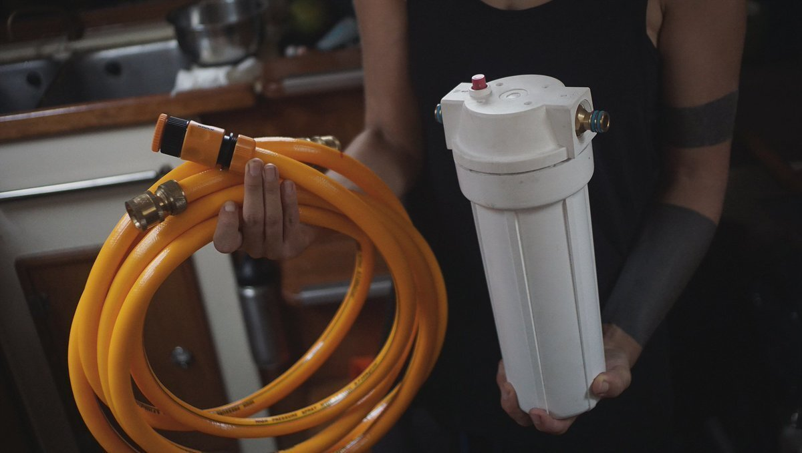
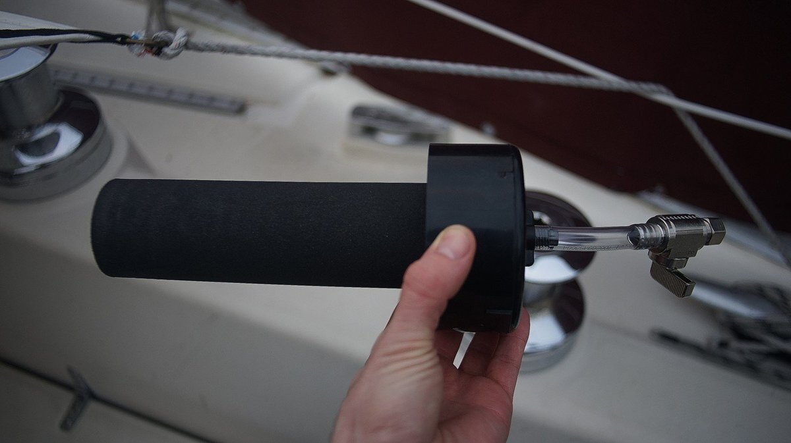

water filtration
If we have a tap near the boat that permits the use of a hose, we hook a twin set of filter housings in the line to purify the water. The 1st stage filter is pleated, and removes sediment, silt, dirt, rust, and other particles, and the 2nd stage carbon filter reduce the content of chlorine, concentration of toxic heavy metals, natural organic matter and oil products.

When we don't have access to pressured water, we filter the water by gravity (see our gravity water filter). We carry a pair of black Berkey purification element filters, a cost-effective way to remove chlorine (inc. chloramines), heavy metals, pharmaceuticals, VOCs, parasites, viruses, pathogenic bacteria, herbicides/pesticides, and hundreds of other contaminants from the water without removing the beneficial minerals, and without the use of any electricity.
Each element is designed to purify approximately 3,000 gallons of water before needing replacement, so they last a long, long time. We built our own filter holder (above photo), and strain contaminants in the water by gravity (a container over a bucket, with the purification elements in the top bucket, transfering clean water to the bottom bucket. Bottom bucket ought to have spigot).
For low-tech options, check out this ceramic filter, or the 3 bucket water filtration system. We aimed for the most compact, and practical system possible, even if it isn't the cheapest.